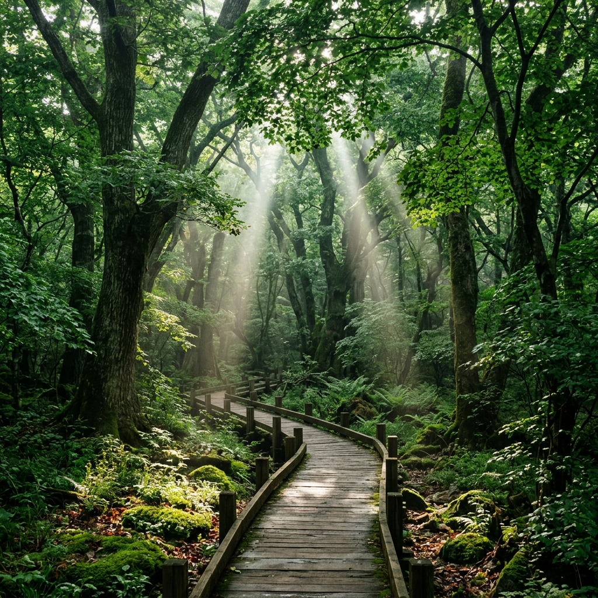
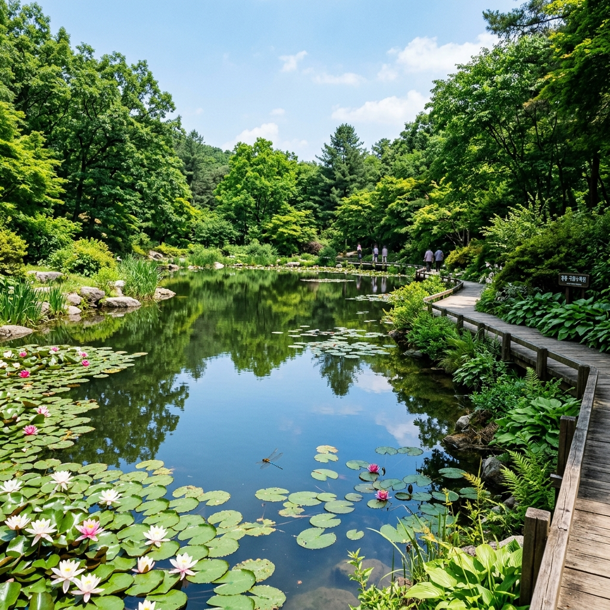
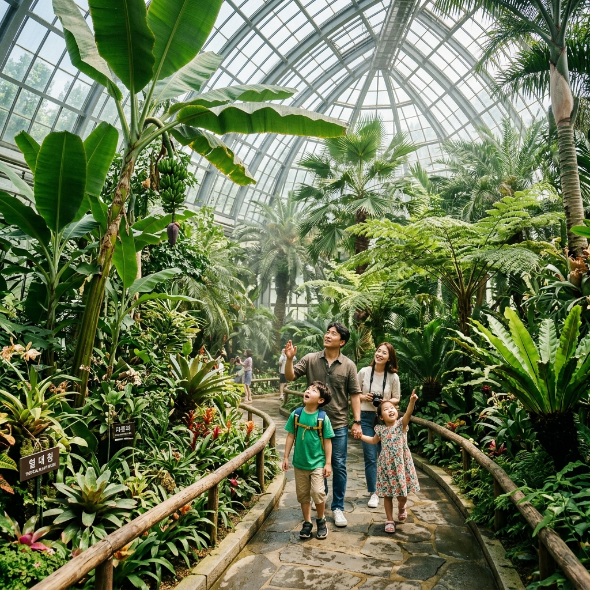

국립수목원의 광릉숲은 단순히 예쁜 꽃들을 전시해 놓은 공원이 아닙니다.
조선 초기부터 벌채가 금지된 덕분에 500년 이상 원형을 유지해온 진짜 원시림입니다. 수령 수백 년의 참나무·서어나무·물푸레나무 등이 하늘을 덮고, 그 사이에는 크낙새·까막딱따구리 등 멸종위기 야생조류가 서식하고 있습니다.
6월에는 나뭇잎이 완전히 무성해지면서 두꺼운 수관이 형성됩니다. 숲 속 온도는 바깥보다 3~5도 낮아 초여름의 더위를 피하기에 더없이 좋은 환경이 됩니다.
국립수목원 방문 시 차량을 가져올 경우 온라인 사전 예약이 필수입니다.
공식 예약 시스템(reservenew.kna.go.kr)에서 방문일을 선택하면 됩니다. 주말과 연휴에는 예약 가능 차량 수가 빠르게 찰 수 있어 일찍 신청하는 것이 중요합니다.
반면 버스나 지하철 등 대중교통과 도보로 방문하는 경우에는 별도 예약 없이 현장에서 입장권을 구매할 수 있습니다. 다만 성수기에는 일일 입장 인원 상한이 적용될 수 있으므로, 방문 전 홈페이지에서 현황을 확인하세요.
단체 방문(20인 이상)은 별도 단체 예약 경로를 이용해야 하며, 숲 해설 프로그램도 예약 시스템을 통해 함께 신청할 수 있습니다.

국립수목원의 이용 요금은 어른 1,000원, 청소년 700원, 어린이 500원입니다. 국가유공자와 장애 1~3급 방문객 및 동반 보호자 1인은 무료 입장이 가능합니다.
운영 시간은 하절기(4~10월) 기준 오전 9시부터 오후 6시까지이며, 마지막 입장은 오후 5시까지입니다.
매주 월요일과 1월 1일, 설날·추석 당일에는 문을 닫습니다. 6월 방문 시에는 월요일을 피해 일정을 잡으세요.
| 구분 | 요금 / 내용 |
|---|---|
| 어른 | 1,000원 |
| 청소년 | 700원 |
| 어린이 | 500원 |
| 운영 (하절기) | 09:00~18:00, 입장 마감 17:00 |
| 휴원 | 매주 월요일, 1월 1일, 설날·추석 당일 |
입장 후 첫 번째로 추천하는 코스는 큰 연못 방향입니다.
연못을 따라 조성된 데크 길을 걸으면 수련과 수생 식물이 수면을 메우고 있는 고요한 풍경을 만납니다. 6월에는 연꽃이 서서히 고개를 내밀기 시작해 수면이 더욱 생동감 있어집니다.
연못을 돌면 화목원으로 이어집니다. 화목원에는 장미·수국·라일락 등 다양한 목본 화훼 식물이 심어져 있으며, 6월은 수국이 막 피기 시작하는 시기입니다. 화목원을 거쳐 육림호 방향으로 돌아오면 1.5시간이 소요됩니다.
더 오래 머물고 싶다면 침엽수원을 향해 걷는 코스를 추가하세요.
하늘을 찌를 듯 솟은 메타세쿼이아와 독일가문비, 히말라야시더 등 거목들이 만들어내는 그늘길은 이 수목원 최고의 구간입니다. 수령 수십 년이 넘은 나무들 아래는 한여름에도 서늘한 온도를 유지합니다.
침엽수원 너머에 있는 열대식물관은 실내 온실로, 바나나·파파야·야자나무 같은 열대 식물이 살아 숨쉬는 공간입니다. 아이와 함께라면 이 구간에서 특히 오래 머물게 됩니다. 두 구간을 합쳐 약 2시간이 걸립니다.

혼자 걷는 것이 아쉽다면 전문 숲 해설가와 함께하는 생태 해설 프로그램을 신청해 보세요.
예약 시스템을 통해 사전 신청이 가능하며, 주말과 성수기에는 조기 마감될 수 있습니다. 해설가의 설명을 들으며 걷다 보면 아무 생각 없이 지나쳤을 나무와 풀꽃 하나하나가 전혀 다르게 보이기 시작합니다.
해설 프로그램에 참여하지 않아도 수목원 곳곳에 설치된 상세 식물 안내 표지판을 통해 혼자서도 충분히 풍성한 탐방이 가능합니다. 입구에서 탐방 안내 지도를 반드시 챙기세요.
국립수목원 방문 후 포천 방향으로 이동하면 포천 아트밸리와 허브아일랜드를 함께 둘러볼 수 있습니다.
남양주 방향으로는 수목원에서 5분 거리인 광릉을 방문해 보세요. 세조와 정희왕후가 잠든 조선왕릉 유네스코 세계유산으로, 능침 주변 소나무숲 산책이 인상적입니다.
봉선사도 가까이 있어 천년 사찰 탐방을 더하면 하루 코스로 역사·자연·생태를 모두 아우르는 알찬 일정이 만들어집니다.
광릉숲은 보호 구역으로 식물 채집과 야생동물 포획은 엄격히 금지됩니다.
반려동물 동반 입장이 불가하며, 지정 탐방로를 벗어난 숲 안 무단 진입도 허용되지 않습니다. 숲속에서는 큰 소리와 음악 재생을 삼가주세요.
걷기 편한 운동화와 긴 소매 상의를 준비하세요. 음료와 간식은 입구 매점 외에는 구하기 어려우므로 충분히 가져오시기 바랍니다.

국립수목원은 학교 교과서 속 식물들을 실제로 만나는 살아있는 자연 교실입니다.
큰 연못에서 올챙이와 개구리를 관찰하거나, 열대식물관에서 실제 열리는 바나나를 보는 경험은 어떤 학습 교재보다 강렬한 인상을 남깁니다. 수목원 어린이 대상 교육 자료와 체험 활동도 홈페이지에서 미리 확인해 두면 더욱 풍성한 방문이 됩니다.
유모차 이용 시 흙길 구간이 있어 바퀴가 두꺼운 유모차가 유리합니다. 아이가 걸을 수 있는 나이라면 짧은 코스부터 시작해 자연스럽게 탐방 거리를 늘려가면 됩니다.